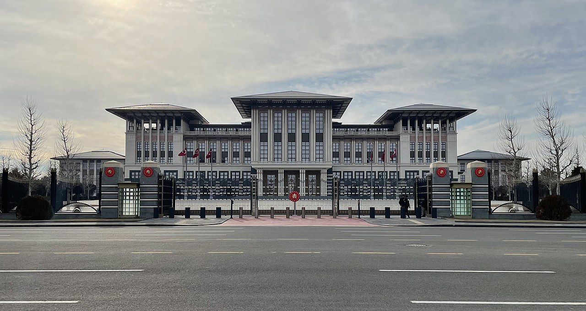

Siyaset
Türkiye, çok partili sisteme sahip temsilî demokrasinin uygulandığı üniter devlettir.[107] Mevcut anayasa 1982'de referandumla onaylandı ve hükümetin yapısını belirlemekle birlikte, devletin ideallerini ve yönetim standartlarını ortaya koymaktadır. Anayasa ayrıca devletin vatandaşlarına karşı sorumluluğunu ve halkın hak ve yükümlülüklerini belirler.
Türk siyasi sisteminde vatandaşlar, ülkesel, il ve yerel olmak üzere üç yönetim düzeyine tabidir. Yerel yönetimin görevleri genellikle belediye yönetimleri ve ilçeler arasında paylaştırılır. Türkiye idari amaçlarla 81 ile bölünmüştür. Her il, toplam 973 ilçe olmak üzere ilçelere ayrılmıştır.
Devlet, anayasa tarafından tanımlanan bir kuvvetler ayrılığı sistemi ile düzenlenmiştir ve yasama, yürütme ve yargı olmak üzere üç kola ayrılmaktadır:
- Yasama
- Yürütme
- Yargı
Yasama
Yasama: Türkiye Büyük Millet Meclisinin görev ve yetkileri, kanun koymak, değiştirmek ve kaldırmak; bütçe ve kesinhesap kanun tekliflerini görüşmek ve kabul etmek; para basılmasına ve savaş ilânına karar vermek; genel ve özel af ilânına karar vermek. Ayrıca hükümet üyelerini görevden alabilecek soruşturma yetkisine sahiptir.
Türkiye Büyük Millet Meclisi. Ankara'da bulunan yasama organı
Yürütme
Yürütme: Cumhurbaşkanı ordunun başkomutanıdır; kanun teklifini yasalaşmadan önce veto edebilir; kabine üyelerini ve ulusal yasaları uygulayan diğer görevlileri atar; temel haklar, bireysel haklar ve belirli siyasi haklar dışında yürütme yetkisine ilişkin konularda cumhurbaşkanlığı kararnameleri çıkarabilir (parlamento yasaları cumhurbaşkanlığı kararnamelerinden üstündür). Ayrıca milletlerarası andlaşmaları onaylar ve yayımlar.
Cumhurbaşkanlığı Külliyesi. Türkiye cumhurbaşkanı'nın ikametgahı ve işyeri
Yargı
Yargı: Anayasa Mahkemesi, Yargıtay, Danıştay ve Uyuşmazlık Mahkemesi anayasa tarafından yüksek mahkemeler olarak tanınmaktadır. Anayasa Mahkemesi, kanunların anayasaya uygunluğunu denetler ve insan haklarına ilişkin bireysel başvurularını karara bağlar. Yargıtay, adli konularda nihai karar mercii. Danıştay, idari yargıda nihai karar mercii. Uyuşmazlık Mahkemesi, adli ve idari yargı arasında çıkacak olan görev uyuşmazlıklarının karara bağlandığı yüksek mahkemedir. Anayasa Mahkemesi'nin üyeleri, cumhurbaşkanı ve meclis tarafından atanır.
Anayasa Mahkemesi. Ülkenin anayasal denetimden sorumlu en yüksek mahkemesi
Meclise 600 milletvekili seçilir. Parlamento üyelerinin her biri beş yıllık bir dönem için bir seçim bölgesini temsil eder. Parlamentonun sandalye dağılımı, nüfus sayımına uygun olarak illere göre dağıtılır. Cumhurbaşkanı ise beş yıllık bir dönem için doğrudan halk tarafından seçilir. Cumhurbaşkanı iki dönemden (10 yıl) sonra yeniden aday olamaz. Cumhurbaşkanının ikinci döneminde Meclis tarafından seçimlerin yenilenmesine karar verilmesi hâlinde, Cumhurbaşkanı bir defa daha aday olabilir. Meclis seçimleri ve cumhurbaşkanlığı seçimleri aynı gün yapılır. Anayasa Mahkemesi on beş üyeden oluşur. Bir üye on iki yıllık bir süre için seçilir ve yeniden seçilemez. Anayasa Mahkemesi üyeleri altmışbeş yaşını doldurduklarında emekli olmak zorundadırlar.
Seçimler ve Partiler
Türkiye'de seçimler altı yönetim kademesi için yapılır: meclis seçimleri (ulusal), cumhurbaşkanlığı seçimleri (ulusal), büyükşehir belediye başkanları (yerel), ilçe belediye başkanları (yerel), il veya belediye meclisi üyeleri (yerel) ve muhtarlar (yerel). Seçimler dışında zaman zaman referandumlar da düzenleniyor.
18 yaşını doldurmuş her Türk vatandaşı, seçimlerde oy kullanma ve aday olma hakkına sahiptir. Her iki cinsiyet için de genel oy hakkı Türkiye'nin her yerinde uygulanmaktadır. Türkiye'de hem genel hem de yerel seçimlere katılım oranları yüzde 80'lerde bulunmaktadır. Türkiye'de 88 seçim bölgesi vardır ve bu seçim bölgelerinden aday olan 18 yaş üstü kişilerden 600 tanesi beş yıl aralıklarla liste usulü çoğunluk seçim sistemi yoluyla milletvekili olarak seçilir. Anayasa Mahkemesi, laiklik karşıtı veya terörle bağlantısı olan siyasi partilerin kamu finansmanını veya tamamen varlıklarını ortadan kaldırma hakkına sahiptir. Ülkede %7 seçim barajı uygulaması vardır. Küçük partiler, diğer partilerle ittifak kurarak seçim barajını aşabilirler. İttifakın toplam oyu %7'yi geçmesi yeterlidir. Bağımsız adaylar seçim barajına tabi değildir.
İkinci Dünya Savaşı'ndan sonra Türkiye'de siyaset çok partili bir sistem altında faaliyet göstermiştir. Türk siyasi yelpazesinin sağ tarafında Demokrat Parti (DP), Adalet Partisi (AP), Anavatan Partisi (ANAP) ve Adalet ve Kalkınma Partisi (AK Parti) gibi partiler bir zamanlar Türkiye'nin en büyük siyasi partisi oldular. Türk sağ partilerinin muhafazakarlık, milliyetçilik, liberalizm veya İslamcılık gibi siyasi ideolojilerin ilkelerini benimseme eğilimindedir. Yelpazenin sol tarafında, Cumhuriyet Halk Partisi (CHP), Sosyaldemokrat Halkçı Parti (SHP) ve Demokratik Sol Parti (DSP) gibi partiler bir zamanlar en büyük seçim başarısını elde ettiler. Sol partilerin sosyalizm, Kemalizm veya laiklik ilkelerini daha fazla benimseme eğilimindedir.
12. Cumhurbaşkanı Recep Tayyip Erdoğan şu anda devlet ve hükümet başkanı olarak görev yapıyor. Kemal Kılıçdaroğlu, Türkiye'nin ana muhalefet lideridir. Mustafa Şentop, Türkiye Büyük Millet Meclisi Başkanı'dır.
Meclisin 27. dönemi, 2018 genel seçimlerinin ardından başlamıştır ve başlangıçta milletvekili dağılımı şu şekilde belirlendi: Adalet ve Kalkınma Partisi (AK Parti) 295, Cumhuriyet Halk Partisi (CHP) 146, Halkların Demokratik Partisi (HDP) 67, Milliyetçi Hareket Partisi (MHP) 49 ve İYİ Parti 49 sandalye. Bir sonraki parlamento seçimlerinin 2023 yılında yapılması planlanıyor.
2014'ten beri mevcut Cumhurbaşkanı, Recep Tayyip Erdoğan
Hukuk
Türkiye'de, tamamı Avrupa kıtasıyla uyumlu hâle getirilmiş olan bir hukuk sistemi vardır. Örneğin Borçlar Kanunu ve Türk Medeni Kanunu, İsviçre'den alınmıştır. Medeni Kanun, İsviçre'nin medeni kanununun Türk kültürüne uyarlanmasıyla hazırlanmıştır. İdare Hukuku kuralları Fransa'daki muadili ile benzerlikler taşır, Ceza Kanunu ise İtalya'dan alınmıştır.
Türkiye'de güçler ayrılığı ilkesi benimsenmiştir. Bu ilke doğrultusunda, yargı gücü Türk milleti adına yalnızca bağımsız ve tarafsız mahkemeler tarafından kullanılabilir. Mahkemelerin bağımsızlığı ve kuruluşu, hâkim ve savcıların görev süreleri boyunca güvenliklerinin sağlanması, hâkim ve savcıların görevleri, hâkim ve savcıların denetlenmesi, askerî mahkemeler ve kuruluşu, yüksek mahkemelerin yetki ve görevleri Türkiye Anayasası ile belirlenir.
Türkiye Cumhuriyeti Anayasası'nın 142. maddesine göre mahkemelerin kuruluşu, görev ve yetkileri, işleyişi ile yargılama usulleri kanunla düzenlenir. Bu yasada ve ilgili diğer anayasa maddeleri doğrultusunda Türkiye'deki mahkeme sistemi üç ana başlık altında toplanır: Yargı Mahkemeleri, İdare Mahkemeleri ve Askerî Mahkemeler. Her başlık, birinci derece mahkemeler ile yüksek maddeleri bünyesinde barındırır. Ülkedeki adli, idari ve askeri yargı mercileri arasındaki görev ve hüküm uyuşmazlıklarını kesin olarak çözümlemek için Uyuşmazlık Mahkemesi kurulmuştur.
Türkiye'de kolluk kuvvetleri Emniyet Genel Müdürlüğü ve Jandarma Genel Komutanlığı gibi çeşitli birimlere ayrılmaktadır. Tüm bu kolluk kuvvetleri İçişleri Bakanlığına bağlı olarak hareket eder. Adalet Bakanlığı tarafından Kasım 2008'de açıklanan verilere göre, Türkiye cezaevlerinde bulunun kişi sayısı 100.000'i aşmıştır ve bu sayı 2000'lerin başındaki sayının iki katıdır.
İstanbul Adalet Sarayı, Şişli semtinde bulunan bir adliye binasıdır.
Dış ilişkiler
Türkiye, Birleşmiş Milletler (1945), OECD (1961), İslam İşbirliği Teşkilatı (1969), AGİT (1973), EİT (1985), KEİ (1992), D-8 (1997), G-20 (1999) ve Türk Devletleri Teşkilatı (2009) gibi uluslararası örgütlerin kurucu üyelerinden birisidir. 1951-1952, 1954-1955, 1961 ve son olarak 2009-2010 yıllarında Birleşmiş Milletler Güvenlik Konseyi'nde geçici üye olarak görev yapmıştır.
Geleneksel Batı yönelimi doğrultusunda, Avrupa ile ilişkiler her zaman Türk dış politikasının merkezî bir parçası olmuştur. 1949 yılında Avrupa Konseyi'ne üye olan ülke, 1963 yılında Avrupa Ekonomik Topluluğu (sonradan Avrupa Birliği'ne dönüştü) ile ortaklık ilişkisi kurdu. Uzun yıllar devam eden siyasi görüşmelerin ardından, 1987 yılında AET'ye tam üyelik için başvurdu, 1992 yılında Batı Avrupa Birliği'nin ortak üyesi oldu, 1995'te AB Gümrük Birliği'ne katıldı ve 2005 yılında Avrupa Birliği ile tam üyelik müzakerelerine başladı. Türkiye'nin Kıbrıs Sorunu'nda AB üyelerinin aksine Kuzey Kıbrıs Türk Cumhuriyeti'ni desteklemesi, AB ilişkilerini zorlaştırmakta ve ülkenin AB'ye üyelik sürecindeki önemli bir engel olmaya devam etmektedir. Bugün, Avrupa Birliği üyeliği Türkiye tarafından stratejik bir hedef ve devlet politikası olarak kabul edilmektedir.
Türkiye'nin dış ilişkilerinin bir diğer belirleyici unsuru Amerika Birleşik Devletleri ile ilişkiler olmuştur. Sovyetler Birliği'nin oluşturduğu ortak tehdit sebebiyle Türkiye, 1952'de NATO'ya üye oldu ve Soğuk Savaş boyunca Washington hükûmetleri ile yakın ikili ilişkiler içinde bulundu. Türkiye, Avrupa Birliği'ne üyelik gibi önemli konular da dahil olmak üzere Amerika Birleşik Devletleri'nin siyasi, ekonomik ve diplomatik desteğinden yararlandı. Soğuk Savaş sonrasındaki dönemde Türkiye'nin jeostratejik önemi, çevresinde bulunan Orta Doğu, Kafkasya ve Balkan coğrafyalarına doğru kaydı.
1991 yılında Sovyetler Birliği'nin dağılmasının üzerine Türk Cumhuriyetleri bağımsızlıklarını elde ettiler. Türkiye, Ön ve Orta Asya'da bulunan bu cumhuriyetler ile ikili ilişkilerini, aralarında bulunan derin kültürel ve dilsel bağ sebebiyle ilerletme çabası içine girdi. Özellikle Azerbaycan, Türkiye ile ilişkilerinin önemini vurguladı. Bakü'den Ceyhan'a uzanan Bakü-Tiflis-Ceyhan Petrol Boru Hattı (BTC), Hazar Denizi'ndeki petrolü küresel pazara aktarmayı sağlamakta ve Türkiye'nin dış politika stratejisinin bir bölümünü oluşturmaktadır. Azerbaycan'ın Ermenistan ile yaptığı Karabağ Savaşı'nda Azerbaycan'ı destekleyen Türkiye, savaş yıllarından bu yana Ermenistan ile var olan sınır kapılarını kapalı tutmaktadır. Günümüzde AK Parti hükûmeti dönemi, Türkiye'nin Yeni Osmanlıcılık dönemi olarak adlandırıldı ve ülkenin etkisi stratejik konumuna bağlı olarak Ortadoğu'da arttı. Bu politikalar Türkiye'nin çevresindeki Arap ülkeleriyle sorunlar yaşamasına yol açtı. Örneğin Suriye İç Savaşı'ndan sonra Suriye ile, Muhammed Mursi'nin devrilmesinden sonra Mısır ile Türkiye'nin arası bozuldu.
Türkiye, 1950'den bu yana Birleşmiş Milletler ve NATO bünyesi dahilinde uluslararası alanda çeşitli güçlerin korunmasına yardımcı olmuştur. Somali ile eski Yugoslavya'da barış ortamının korunmasına destek sağlamış ve Birinci Körfez Savaşı'nda koalisyon güçlerini desteklemiştir. Bunun yanı sıra varlığı tartışmalı olsa da Kuzey Kıbrıs Türk Cumhuriyeti topraklarında 36.000 askerini bulundurmaktadır. Afganistan'da Amerika Birleşik Devletleri'nin istikrar gücü, BM yetkilisi ve 2001'den bu yana NATO komutası altında Uluslararası Güvenlik Yardım Kuvveti'nin bir parçası olarak bulunmaktadır. 2003'ten beri Türkiye, Avrupa Kolordusu'na askerî personel sağlamakta ve AB Savaş Grupları'nda yer almaktadır.
1963'ten bu yana AET'nin ortak üyesi olan ve 1995'te AB Gümrük Birliği'ne katılan Türkiye, 2005 yılında Avrupa Birliği'ne tam üyelik müzakerelerine başladı.
Ordu
Türk Silahlı Kuvvetleri üç bölümden oluşur: Kara Kuvvetleri, Deniz Kuvvetleri ve Türk Hava Kuvvetleri. İç emniyeti sağlama ve askeri işlevleri olan Jandarma ile Sahil Güvenlik, barış zamanında İçişleri Bakanlığı'na, savaş zamanında Kara ve Deniz kuvvetlerine bağlıdır.
Türk Silahlı Kuvvetleri'ni komuta edip yönlendiren en üst düzey birim olan Genelkurmay Başkanı, cumhurbaşkanı tarafından atanır ve Millî Savunma bakanına bağlı ve sorumludur. Bakanlar Kurulu, millî güvenlik ve ülke savunması için yeterli silahlı kuvvetlerin hazırlanması konularında meclise karşı sorumludur. Ancak savaş ilan etme, dış ülkelere asker gönderme veya dış ülke askerlerinin Türkiye'ye konuşlanmasına izin verme yetkileri yalnızca meclise aittir.
Sağlık sorunu olmayan her erkek Türk vatandaşının eğitim durumu ve iş yerine bağlı olarak üç hafta ile altı ay arasında değişen bir süreliğine askerî hizmet yapması zorunludur. Türkiye'de vicdanî ret uygulaması bulunmamaktadır ve askerlik yerine sivil bir alternatif sunulmamaktadır.
2011 NATO sayımlarına göre ülkenin tahminî 495.000 konuşlandırılabilir kuvveti bulunmaktadır. Almanya, Belçika, Hollanda ve İtalya ile birlikte NATO'nun nükleer paylaşım politikasının bir parçası olan beş ülkeden biridir. İncirlik Hava Üssü'nde toplam 90 tane B61 nükleer bombası bulunmaktadır, bunlardan 40 tanesi nükleer bir çatışma durumunda NATO'dan onay almak şartıyla Türk Hava Kuvvetleri'nin kullanması için tahsis edilmiştir.
Türk Silahlı Kuvvetleri, ABD Silahlı Kuvvetleri'nden sonra NATO'nun en büyük ikinci askerî gücüdür. Türkiye, 1952 yılında NATO'ya katılmıştır.
İnsan hakları
Türkiye'de insan hakları, çeşitli uluslararası hukuk anlaşmaları ile koruma altına alınmıştır. 1982 Anayasasının 90. maddesine göre uluslararası hukuk kurallarının iç hukuka karşı üstünlüğü kabul edilmiştir. Fakat belli konularda sorunlar ve tartışmalar sürmektedir. 1998 ve 2008 yılları arasında Avrupa İnsan Hakları Mahkemesi tarafından özellikle yaşama hakkı olmak üzere genel insan hakları ihlalleri ve özgürlük ihlalleri nedeniyle Türkiye aleyhinde 1.600 karar alınmıştır. Aynı zamanda Kürt hakları, kadın hakları, LGBT hakları ve basın özgürlüğü gibi diğer konular da tartışmalara sebep olmuştur. Günümüzde Türkiye'nin insan hakları ihlallerindeki sicili, AB üyeliğine bir engel teşkil etmeye devam etmektedir. Gazetecileri Koruma Komitesi'ne göre uzun yıllardır ülkeyi yöneten AKP hükûmeti, basın özgürlüğü açısından dünyanın en büyük baskılarından birini uygulamaktadır. Ülkede çok sayıda gazeteci önceleri Ergenekon ve Balyoz davaları gibi çeşitli davalar kapsamında, daha sonraları 2016 yılındaki darbe girişimi takip eden tasfiyeler çerçevesinde "terörizm" ve "devlet karşıtı faaliyetler" ile suçlanarak tutuklandı. "Türklüğü aşağılamak" ve "yargıyı etkilemek" suçlarıyla da gazetecilere karşı çeşitli kovuşturmalar başlatıldı, ayrıca hükûmetin basındaki oto-sansürü içselleştirdiği iddia edildi. 2013 yılında Gazetecileri Koruma Komitesi, Türkiye'de 211 gazetecinin hapse atıldığını rapor ederek ülkenin bu rakamla en fazla gazeteci tutuklayan ülke sıralamasında İran, Eritre ve Çin'i geçerek tepeye yerleştirdiğini bildirdi. Freemuse ise dokuz müzisyenin çalışmaları yüzünden hapse atıldığını belirleyerek müzisyenlerin hapsedilmesi bakımından ise ülkenin Rusya ve Çin'den sonra üçüncü sırada olduğunu açıkladı. Türkiye, Freedom House tarafından 'Kısmen Özgür' sınıfında değerlendirilir.
2013'teki Gezi Parkı protestoları